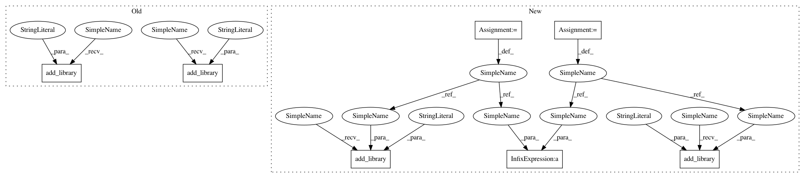

8eb29877fede82ff225d10fe260d67fb6651a0c0,scipy/integrate/setup.py,,configuration,#Any#Any#,7
Before Change
blas_opt = get_info("blas_opt",notfound_action=2)
config.add_library("linpack_lite",
sources=[join("linpack_lite","*.f")])
config.add_library("mach",
sources=[join("mach","*.f")],
config_fc={"noopt":(__file__,1)})
config.add_library("quadpack",
sources=[join("quadpack","*.f")])
config.add_library("odepack",
sources=[join("odepack","*.f")])
config.add_library("dop",
sources=[join("dop","*.f")])
After Change
blas_opt = get_info("blas_opt",notfound_action=2)
linpack_lite_src = [join("linpack_lite","*.f")]
mach_src = [join("mach","*.f")]
quadpack_src = [join("quadpack","*.f")]
odepack_src = [join("odepack","*.f")]
dop_src = [join("dop","*.f")]
config.add_library("linpack_lite", sources=linpack_lite_src)
config.add_library("mach", sources=mach_src,
config_fc={"noopt":(__file__,1)})
config.add_library("quadpack", sources=quadpack_src)
config.add_library("odepack", sources=odepack_src)
config.add_library("dop", sources=dop_src)
// should we try to weed through files and replace with calls to
// LAPACK routines?
// Yes, someday...
// Extensions
// quadpack:
config.add_extension("_quadpack",
sources=["_quadpackmodule.c"],
libraries=["quadpack", "linpack_lite", "mach"],
depends=(["quadpack.h","__quadpack.h"]
+ quadpack_src + linpack_lite_src + mach_src))
// odepack
libs = ["odepack","linpack_lite","mach"]
// Remove libraries key from blas_opt
if "libraries" in blas_opt: // key doesn"t exist on OS X ...
libs.extend(blas_opt["libraries"])
newblas = {}
for key in blas_opt:
if key == "libraries":
continue
newblas[key] = blas_opt[key]
config.add_extension("_odepack",
sources=["_odepackmodule.c"],
libraries=libs,
depends=(["__odepack.h","multipack.h"]
+ odepack_src + linpack_lite_src
+ mach_src),
**newblas)
// vode
config.add_extension("vode",
sources=["vode.pyf"],
libraries=libs,
depends=(odepack_src + linpack_lite_src
+ mach_src),
**newblas)
// lsoda
In pattern: SUPERPATTERN
Frequency: 3
Non-data size: 7
Instances
Project Name: scipy/scipy
Commit Name: 8eb29877fede82ff225d10fe260d67fb6651a0c0
Time: 2013-08-18
Author: pav@iki.fi
File Name: scipy/integrate/setup.py
Class Name:
Method Name: configuration
Project Name: scipy/scipy
Commit Name: 8eb29877fede82ff225d10fe260d67fb6651a0c0
Time: 2013-08-18
Author: pav@iki.fi
File Name: scipy/integrate/setup.py
Class Name:
Method Name: configuration
Project Name: scipy/scipy
Commit Name: 8eb29877fede82ff225d10fe260d67fb6651a0c0
Time: 2013-08-18
Author: pav@iki.fi
File Name: scipy/fftpack/setup.py
Class Name:
Method Name: configuration
Project Name: scipy/scipy
Commit Name: 8eb29877fede82ff225d10fe260d67fb6651a0c0
Time: 2013-08-18
Author: pav@iki.fi
File Name: scipy/optimize/setup.py
Class Name:
Method Name: configuration